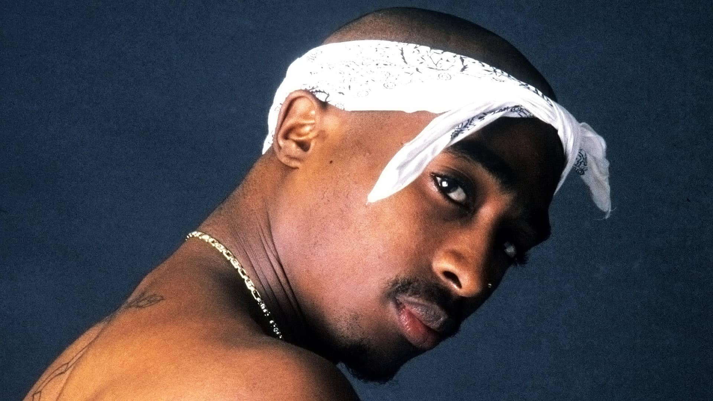

Tokasivu
Ekalle sivulle takaisin ---->
Selaimesi ei tue audio-tagia.
Minun sivu
Tästä tulee minun linkki
Matikki
background="lataa.jpg"
jfjfkgfk
Tässä on dokumentin selainikkunassa näkyvä osa.2pac.jpg
v4hgkjhlk5 iuheqhfoohd